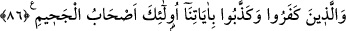

gelen hakka îman etmeyelim?” Yani, biz sâlihlerle berâberliği umup dururken îman
etmediğimizde elimize ne geçecek?
Âyette geçen “hak”dan maksat, “gerçek” anlamındaki hak olabileceği gibi, Bârî Teâlâ
anlamındaki Hak da olabilir.
85. Bu sözlerinden dolayı Allah onlara zemîninden ırmaklar akan, içinde ebedî
kalacakları cennetleri mükâfat olarak verdi. Güzel davrananların mükâfatı işte
budur.
Onların “bu sözlerinden dolayı Allah onlara” ağaçlarının, evlerinin ve odalarının
“zemîninden” su, bal, şarap ve sütten “ırmaklar akan, içinde ebedî kalacakları
cennetleri mükâfât olarak verdi.”
İşlerinde “güzel davrananların” yani güzelce düşünen ve amel eden veya her
işlerinde güzel davranmayı adet hâline getirenlerin “mükâfatı işte budur.”
86.
İnkâr
eden
ve
âyetlerimizi
yalanlayanlara
gelince
işte
onlar
cehennemliklerdir.
Buna mukabil “inkâr eden ve âyetlerimizi yalanlayanlara” ve bu hal üzere ölenlere
“gelince işte onlar cehennemliklerdir!” Ateşi şiddetli olarak tutuşturulmuş cehennem
ehlidirler.
“Allah’ın âyetlerini yalanlamak” da bir inkâr çeşidi olmasına rağmen, “inkar edenler”
denildikten sonra onlar özellikle tekrar edilmektedir. Bundan maksat, âyetleri
yalanlayanların durumlarını iyice belirgin hâle getirmektir.
Cehennemlikler, hayvanca, canavarca ve şeytanca sıfatlarla perdelenmiş kimselerdir.
Bu sebeple Allah onların görme ve anlama kabiliyetlerini almıştır. Dinlerler fakat
işitmezler, bakarlar fakat görmezler. Halbuki Allah, elest bezminde “Ben sizin
Rabbiniz değil miyim?” buyurup kelâmını işittirdiği ve rubûbiyetine şâhitlik için
“Evet” diyen (bk. el-A’râf, 7/172) cevap vermeye muvaffak kıldığı kimselere, bu
dünyâda da kelâmını işittirir ve kelâmının hakikatini bildirir. Onlar da Hak sözünü
duyunca şevke gelirler. Kalpleri elest bezminde söz verdikleri vakit meydana gelen